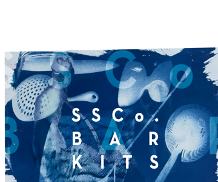
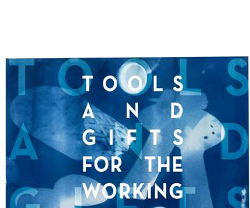
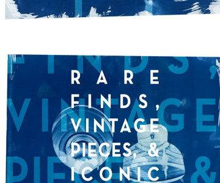
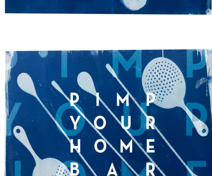
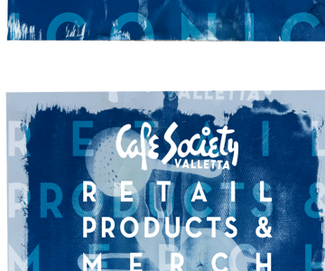
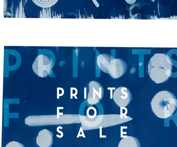

ter·roir /tɛˈʁwɑːʁ/, noun., (origin: from old french TERRE (earth or land), based on latin TERRITORIUM (territory), with french suffix -OIR (denoting a specific place associated with an object or activity)
1. The complete natural environment in which a particular wine, spirit, or agricultural product is produced, including factors such as soil, topography, and climate, which impart a distinctive character to it.
Although usually used to discuss environmental indicators in wines and spirits, it is also worth contemplating the terroir of the tools of the trade that bartenders and connoisseurs use to serve those drinks and the vessels that they are served in.
Throughout history and across geography, varying tastes and drinking cultures have called for innovative and perfected techniques. Bartenders adapted (as we always do), equipped by skilled artisans of glass and crystal work, metallurgy, and industrial design.
Those bartenders' and artisans' legacy and legend are infused into beautiful, functional works of art that can be handled and enjoyed again and again.





